With
a stamp pane issued on March 11, 2010, the U.S. Postal Service honored the
artistic innovations and achievements of ten abstract expressionists, a group
of artists who revolutionized art during the 1940s and 1950s and moved the
U.S. to the forefront of the international art scene for the first time. The
stamps went on sale March 11, 2010.
Abstract expressionism refers to a large body of work that
comprised radically different styles, from still, luminescent fields of
color to vigorous, almost violent, slashes of paint. In celebration of the
abstract expressionist artists of the 20th century, art director Ethel Kessler
and noted art historian Jonathan Fineberg (Gutgsell Professor of Art History,
University of Illinois at Urbana-Champaign) selected ten paintings to feature
on this colorful pane of self-adhesive stamps. Kessler used elements from
Barnett Newman’s Achilles (1952) to frame the stamps. The arrangement of
the stamps suggests paintings hanging on a gallery wall. For design purposes
the sizes of the stamps are not in relative proportion to the paintings.
Source.
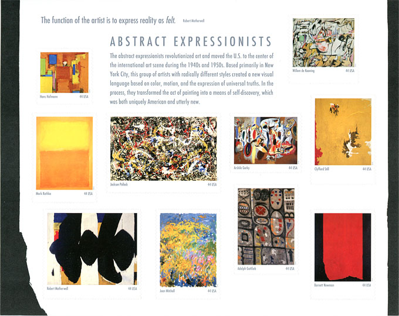
As
the readers of this site know it, I'm not a fan of the abstract art, and
this is rather an understatement. But nevertheless the presented pane fully
deserves our attention, because it shows how the usage of a relatively new
technology, I speak about the self-adhesives stamps, can enhance the presentation
of the philatelic material.
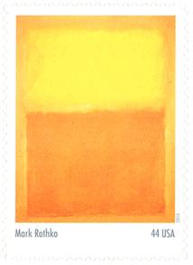
Orange
and Yellow (1956)
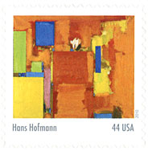
The
Golden Wall (1961)
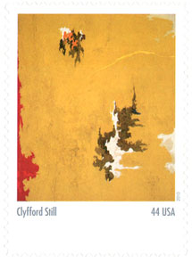
1948-C
(1948)
Here
we have ten stamps, each one characterized by a different dimension, which
is the usual situation in a museum or an exhibition. It is possible to do
the same in a traditional manner, on gummed paper, but it is technically
more complicated, and less practical for the user.
Not
only that the stamps could be placed more or less randomly, but the front
space could be also used for a general explanation of the Abstract Impressionism.
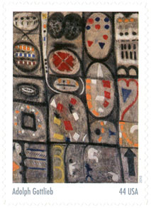
Romanesque
Façade (1949)
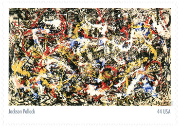
Convergence
(1952)
The
back of the pane, because it isn't adhesive anymore, was properly used for
information about each painter (there are ten of them!) and about the displayed
work of art. More info can be found here.
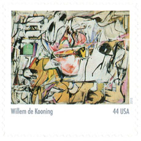
Asheville
(1948)
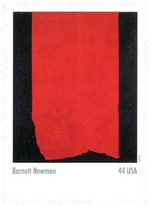
Achilles
(1952)
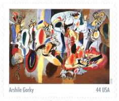
The
life is in the Cock's Comb (1944)
By the
way, I used these data when I labeled each of the stamps on this page. There
is another advantage, that you can keep the pane in your hands, because
there isn't a sensitive gum on the back anymore.
To find
out more about the artists and about their works you are invited to buy
the pane from the USPS. It is available online and it doesn't belong to
the top sellers, and therefore it will be available for a while. Just to
mention that it is known that the majority of stamp collectors prefers the
classical works of art, and for this reason it isn't USPS but countries
like Ghana, Maldives and other Grenadines (or rather the dealers behind
them) that make money by selling stamps reproducing classical works of art
that are found in the US museums. Look for an example here.
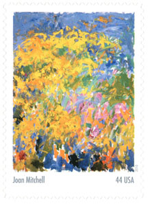
La
grande vallée 0 (1983)
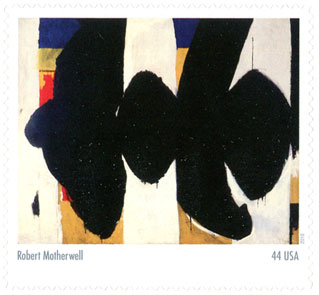
Elegy
to the Spanish Republic # 34 (1953-1954)
A note
concerning the philosophy of one of the featured artist, Robert Motherwell,
who received his BA in philosophy from Stanford, and who is the author of
the quotation that appears in the top of the pane: "The function of
the artist is to express reality as felt".
There were several streams
in arts, and among them: The Realists (Flaubert, Courbet), who
expressed the reality as it was, and The Romanticists (Hugo, Delacroix),
who expressed it as it should be. Later came The Feeltists
(R. Motherwell & Co), but also a current that openly opposed them, the
Neo-Romantics. Ayn Rand: "Emotions are not tools of cognition.
What you feel tells you nothing about the facts; it merely tells you something
about your estimate of the facts. Emotions are the result of your value
judgments; they are caused by your basic premises, which you may hold consciously
or subconsciously, which may be right or wrong."
From
the title of his painting (Elegy
to the Spanish Republic) one
can suppose which were his basic premises. If interested, read the Wiki
page that refers to the object of his nostalgia. It is up to the reader
to value or not the emotions expressed in the celebrated works of art that
are reproduced above.
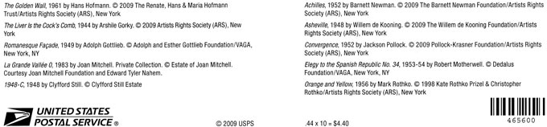
I show
above the copyright of the artworks and I remind that, being a non-professional
philatelic journalist, I publish low resolution scans of stamps from my
personal collection for teaching, in accordance with the paragraphs
1. and 2. of the Article 10 of the Berne Convention for the Protection of
Literary and Artistic Works.
Update.
In Linn's 2010 US Stamps popularity Poll the Abstract Impressionsts pane
was on the 4th-5th places in the Best Design category. In the same poll
it was awarded the first place in the Worst Design category. The overal
winner was the Adopt a Shelter Pet pane, the only other one that I bought,
as being the one that I couldn't resist.